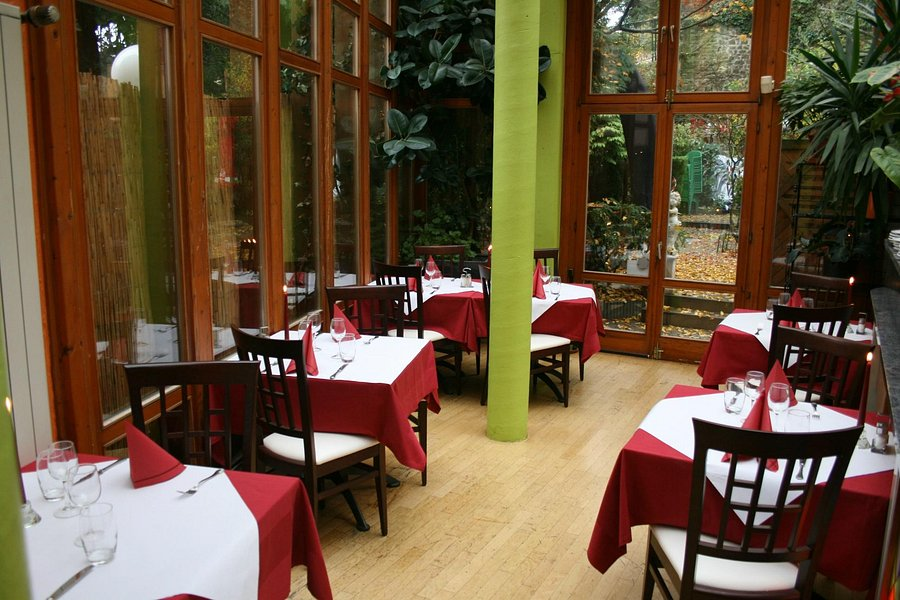

La Maison
Une adresse italienne depuis 1999.
Depuis 1999, nous sommes une adresse où savourer une cuisine italienne aux parfums et saveurs méditerranéens, dans un cadre rétro-moderne sur deux étages — quatre salles, une véranda lumineuse et notre terrasse nichée dans les falaises de la Pétrusse.
a
Pâtes & pizzas maison
Pâtes fraîches faites maison et pizzas cuites au feu de bois, dans la pure tradition italienne.
b
La terrasse des falaises
« La plus belle terrasse de Luxembourg » — guirlandes lumineuses et verdure contre la roche.
c
Quatre salles, un cadre
Deux étages, une véranda et un salon privé — pour un dîner à deux comme pour une réception.